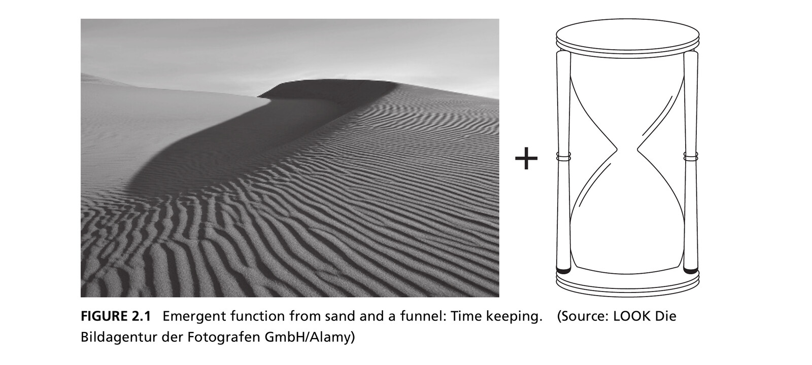
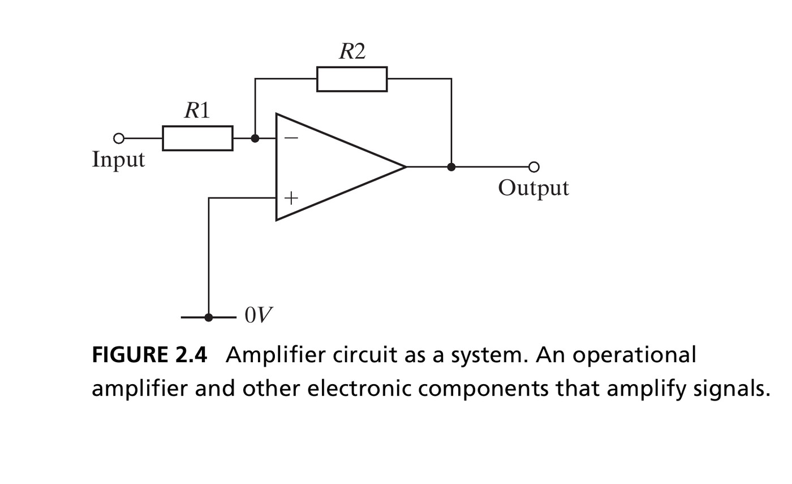
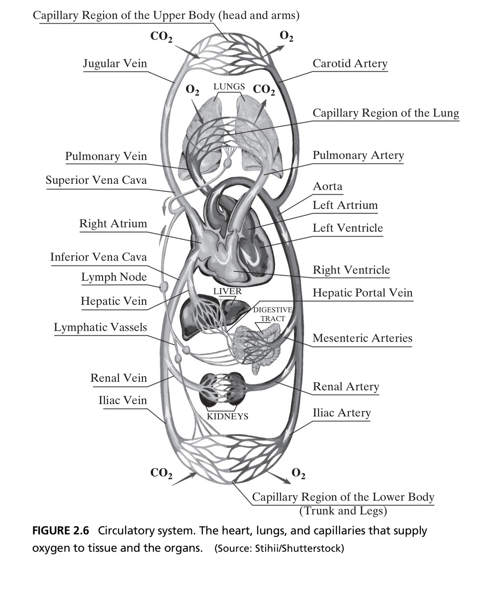
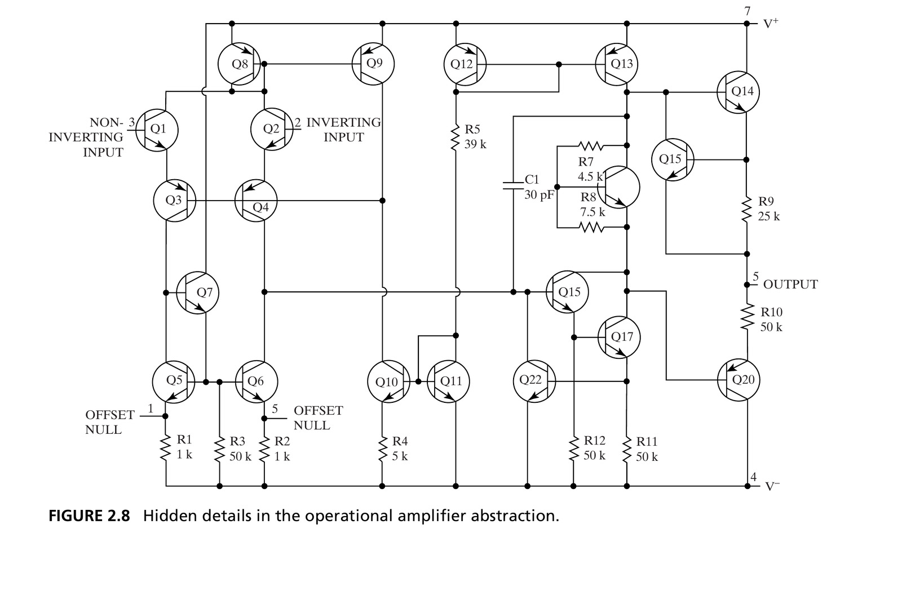

System Thinking
Systems Architecture · Chapter 2
What Is System Thinking?
- Thinking about a question, circumstance, or problem explicitly as a system
- Goal: help complex systems appear less complicated
- Two levels of ambition:
- Understanding what is — making sense of a system
- Predicting what might be — if something changes
Tip
At the pinnacle of system thinking is synthesizing a system — the subject of Part 3 of this course.
Four Tasks of System Thinking
- Identify the system, its form, and its function
- Identify the entities of the system, their form and function
- Identify the relationships among the entities
- Identify the emergent properties of the system
These four tasks structure the rest of this chapter.
Box 2.1 · Definition: System
A system is a set of entities and their relationships, whose functionality is greater than the sum of the individual entities.
- Almost anything can be considered a system — almost everything contains entities and relationships
- What matters is whether treating it as a system is useful
- The second half of the definition is the important half — it’s what makes a system more than a pile of parts
Systems and Emergence
A system is a set of entities and their relationships, whose functionality is greater than the sum of the individual entities.
This is emergence — the power and the magic of systems. It’s why we build them.
What Emerges?
- Function — what a system does: its actions, outcomes, outputs
- Anticipated and desirable (cars transport people)
- Anticipated but undesirable (cars burn hydrocarbons)
- Unanticipated but desirable (cars provide a sense of freedom)
- Unanticipated and undesirable (cars can kill people)
- Performance — how well the system executes its function
- The “ilities” — reliability, maintainability, safety, robustness — emerge over the system’s lifecycle, not immediately
Table 2.1 · Types of Emergent Function
Cars keep people warm/cool
Figure 2.1 · Emergence from Sand and a Funnel

Neither sand nor a funnel-shaped tube has a “timekeeping” function on its own — put together, the emergent function of keeping time appears. Source: Crawley, Cameron & Selva (2016), Fig. 2.1. Photo: LOOK Die Bildagentur der Fotografen GmbH/Alamy.
Box 2.2 · Principle of Emergence
“A system is not the sum of its parts, but the product of the interactions of those parts.” — Russell Ackoff
“The whole is more than the sum of the parts.” — Aristotle, Metaphysics
- The interaction of entities leads to emergence
- As a consequence, change propagates in unpredictable ways
- It is difficult to predict how a change in one entity will influence emergent properties
- System success = anticipated properties emerge; system failure = they don’t (or unwanted ones do)
Figure 2.2 · Emergent Performance
Every soccer team has the same function — score more than the opponent. Performance is how well the system executes it. The German national team, arguably the world’s highest-performing team in 2014, went on to win the World Cup. Source: Crawley, Cameron & Selva (2016), Fig. 2.2. Photo: wareham.nl (sport)/Alamy.
Emergency: When Emergence Goes Wrong
- The most severe class of emergence: severe, unanticipated, undesirable emergence
- We call this an emergency — same word root as emergence
- Cars lose traction and spin. A soccer team implodes on the day of a big match.
Hurricane Katrina bearing down on New Orleans. Source: Crawley, Cameron & Selva (2016), Fig. 2.3. Image courtesy GOES Project Science Office/NASA.
Section 2.2 Summary
- A system is a set of entities and their relationships, whose functionality is greater than the sum of the individual entities
- Almost anything can be considered a system
- Emergence occurs when the functionality of the system is greater than the sum of the functionalities of the individual entities
- Understanding emergence is the goal — and the art — of system thinking
- Function, performance, and the “ilities” emerge as systems operate; so does their absence — and so, in the worst case, does an emergency
2.3 Task 1
Identify the System, Its Form, and Function
Task 1: Identify the system, its form, and its function.
- Form is what the system is — physical or informational, with shape, configuration, arrangement, layout
- Function is what the system does — the action for which it exists
- Form is not function, but form is necessary to deliver function
Four Running Examples
We’ll use these four systems throughout the rest of the course — chosen to span built and evolved, informational, organizational, mechanical, and natural systems.


Source: Crawley, Cameron & Selva (2016), Figs. 2.4–2.7.
Function = Process + Operand
- The process is the pure action or transformation — the part that changes the state of something
- The operand is the thing whose state is changed — created, destroyed, or altered
- In organizations, function is sometimes called role or responsibility
Tip
For the amplifier: the process amplifies, and the operand is the output signal.
Table 2.2 · Form and Function
| System | Form | Process | Operand |
|---|---|---|---|
| Amplifier | The amplifier circuit | Amplifies | output signal |
| Design team (Team X) | The team | Develops | design |
| Circulatory system | The circulatory system | Supplies | oxygen |
| Solar system | The solar system | Maintains | constant solar flux |
The solar system’s function is especially emergent — it requires both a constant solar output and a roughly constant planetary orbital radius.
Instrument – Process – Operand
- Every system has an instrument of form (what it is) and a function, which breaks into a process (the transformation) and an operand (what’s transformed)
- Noam Chomsky’s transformational grammar: every sentence has a noun (instrument), a verb (process), and a noun (operand)
noun – verb – noun
= form – process – operand
This instrument–process–operand pattern may be fundamental to how the human brain understands any system.
2.4 Task 2
Identify the Entities
Task 2: Identify the entities of the system, their form and function, and the system boundary and context.
- Systems are composed of a set of entities — their constituents
- Each entity also has its own form and function
- Selecting entities is guided by holistic thinking and by focus
Table 2.3 · Entities Have Form and Function Too
| System Function | Entity Function | Entity Form |
|---|---|---|
| Amplifies signal | Sets gain | Resistor 1, Resistor 2 |
| Amplifies voltage | Operational amplifier | |
| Supplies oxygen | Pumps blood | Heart |
| Exchanges gasses w/ atmosphere | Lungs | |
| Exchanges gasses w/ organs | Capillaries |
Reading right to left — combining entities into the system — is aggregation. Reading left to right — breaking the system into entities — is decomposition. Doing the same with function is called zooming, and reversing it recovers emergence.
Five Issues for the Systems Thinker
- Defining the initial decomposition into entities
- Identifying potential entities using holistic thinking
- Winnowing down to consequential entities using focus
- Creating abstractions for the entities
- Defining the boundary of the system, separating it from context
Modular vs. Integral Systems
Modular
- Made of clearly distinct entities
- Internal relationships are dense within a module, weak between modules
- Decomposition is challenging but relatively clear
Integral
- Highly interconnected — hardest to decompose
- Cannot be easily divided without breaking function
- Example: a car’s steering mechanism (tires, wheels, suspension, column — all simultaneously part of other systems too)
Some systems are trivially distinct (Team X: three separate people) — decomposition there is obvious.
Box 2.5 · Principle of Holism
“Always design a thing by considering it in its next larger context — a chair in a room, a room in a house, a house in an environment, an environment in a city plan.” — Eliel Saarinen
“No man is an island, entire of itself…” — John Donne
- To think holistically is to encompass all aspects of the system at hand — influences, consequences, anything that might interact with it
- Methods: structured/unstructured brainstorming, frameworks, thinking from different perspectives, thinking about context
Known-Unknowns vs. Unknown-Unknowns
Known-unknown
Something you know is there, but don’t know much about. Its presence is known; its features aren’t.
Unknown-unknown
Something you don’t even know is there — no way to evaluate its importance until it surfaces.
Tip
Holistic thinking works to convert as many unknown-unknowns into known-unknowns as possible.
Box 2.6 · Principle of Focus
“I see no more than you, but I have trained myself to notice what I see.” — Sherlock Holmes (Arthur Conan Doyle)
“The question is not what you look at but what you see.” — Henry David Thoreau
- Holistic thinking can surface tens or hundreds of potentially relevant entities — too many for any team to hold at once
- The human brain can reason about roughly seven ± two things at a time [Miller, 1956]
- Failure rarely occurs in aspects on which you focus — it hides in what you left out
Table 2.4 · Evolution of Thinking about Team X
Initial: John develops concept · Sue evaluates & approves design
+ Holistic thinking: + Amy interprets requirements · Heather determines customer needs · Chris does competitive analysis · Karen plans manufacturing · James plans supply chain · Nicole interprets regulation · Meagan coaches team · John models project finance
+ Focus: narrowed back down to Amy, Heather, Chris, Karen, James (finance, team dynamics, regulation dropped)
+ Abstraction: Heather + Chris → “Marketing” · Karen + James → “Operations”
Creating Abstractions
An abstraction brings important details to the surface and hides the rest.
- Op-amp → “amplifies the difference between two inputs”
- A person → a “team member” who creates concepts
- The heart → a simple pump
- Planet Earth → a sphere

The detail hidden inside the “op-amp” abstraction. Source: Crawley, Cameron & Selva (2016), Fig. 2.8.
Guidelines for Good Abstractions
- Represent the important information on the surface, concealing less important detail
- Allow for representation of appropriate relationships
- Create abstractions at the right level of decomposition or aggregation
- Create the minimum number of abstractions that effectively represent the system
Abstractions aren’t unique — which one is “right” depends on the question at hand.
Defining the Boundary
Context is what surrounds the system — entities “just outside” that are still relevant to it.
When a relationship crosses the boundary, it defines an external interface.
2.5 Task 3
Identify the Relationships
Task 3: Identify the relationships among the entities in the system and at the boundary, as well as their form and function.
Relationships come in two flavors:
- Formal relationships — exist or could exist stably (a connection, a geometric relationship). Also called structure.
- Functional relationships — entities doing something to/with each other (operations, transfers, exchanges). Also called interactions.
Formal Enables Functional
- A functional relationship usually requires a formal relationship as its instrument
- The heart cannot exchange blood with the lung without a connection
- Team members cannot share results without proximity or an information link
- Because emergence occurs in the functional domain, functional interactions are ultimately what matter most — but formal relationships are where you start looking
sets gain
amplifies voltage
Two Ways to Represent Relationships
Relationship diagram
Boxes for entities, arrows for relationships. Easy to visualize; gets cluttered fast as entities multiply.
N-Squared table
An N×N grid of entities against themselves; off-diagonal cells describe the relationship. More detail, no visual clutter, but less intuitive at a glance.
Tip
Both diagrams distinguish relationships within the system from relationships that cross the system boundary — the external interfaces.
External Interfaces
- Formal and functional relationships can exist across the boundary, between entities in the system and entities in its context
- These are the system’s external interfaces
- It is nearly impossible to define a system that has no external interfaces — everything connects to something beyond its boundary
Team X’s external interfaces: to Marketing (needs, competitive analysis) and to Operations (manufacturing, supply chain).
2.6 Task 4
Predicting Emergence
Task 4: Based on the function of the entities and their functional interactions, identify the emergent properties of the system.
Emergence is the magic of a system — but it’s hard to predict a priori what will emerge from combining the functions of a system’s entities.
System Failure
Failure happens two ways: the anticipated desirable emergence fails to occur, or undesirable emergence occurs unanticipated.
- Gridlock: every car does exactly what it’s built to do, every driver follows the rules — yet the anticipated performance (fast travel) fails to materialize
- Airbus A320, Warsaw: thrust reverser withheld until both landing gear compressed — but one wing was held low in the crosswind, so one gear never triggered it
A320 overrun in Warsaw, Poland — a system failure where every component worked exactly as designed. Source: Crawley, Cameron & Selva (2016), Fig. 2.12. Photo: STR News/Reuters.
Three Ways to Predict Emergence
Precedent
We’ve done it before, with minimal changes. Grandfather clocks work like this because grandfather’s did too.
Experiments
Put the entities together and see what happens. Spiral development builds a slice first to check emergence.
Modeling
If function and interaction can be modeled, emergence can sometimes be predicted. Integrated circuits: billions of transistors, modeled with a few lines of algebra.
Without precedent, experiment, or reliable modeling — you are reasoning from judgment alone. This is the crux of system thinking.
Emergence Depends on Structure
The same entities, arranged differently, produce different emergence:
Resistor between input/output, capacitor to ground → attenuates high frequencies.
Swap the components → attenuates low frequencies instead.
Fulcrum near the far end → magnifies force.
Move the fulcrum closer to the operator → the emergence disappears.
IF statement first → conditional execution.Reorder the sequence → the statement always executes.
Tip
Pattern of connectivity, physical location, and sequence are all formal relationships — and they govern what functionally emerges.
Section 2.6 Summary
- Emergence can be predicted a priori via precedent, experimentation, and modeling
- For unprecedented systems, humans must reason about emergence from judgment
- Emergence depends on the function of the entities (enabled by form) and on the functional relationships (enabled by formal relationships)
- It is emergence that gives systems their power — and creates the challenge of understanding and predicting them
Table 2.6 · Features and Tasks
| Essential Feature of Systems | Task of System Thinking |
|---|---|
| Systems have form and function; form is the instrument of function | 1. Identify the system, its form and function |
| Systems are composed of entities, which also have form and function | 2. Identify the entities, their form/function, and the boundary |
| Entities are linked through formal and functional relationships | 3. Identify the relationships, their form and function |
| Function and other properties emerge as the entities interact | 4. Identify the emergent properties |
From Understanding to Synthesizing
Next: Thinking about Complex Systems
Chapter 3 extends system thinking to systems with many interrelated, interconnected entities:
- What makes a system complex (vs. merely complicated)
- Decomposition and hierarchy for complex systems
- Special relationship types: class/instance, specialization/generalization
- Tools for reasoning through complexity: zigzagging, views, projections
- An introduction to SysML and OPM
Tip
Reference: Crawley, E., Cameron, B., & Selva, D. (2016). System Architecture: Strategy and Product Development for Complex Systems. Pearson. Chapter 2.

← Course Home · Systems Architecture · Chapter 2